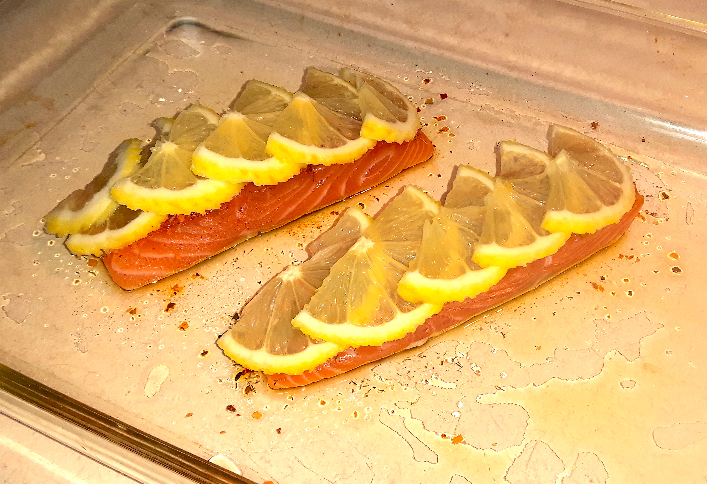
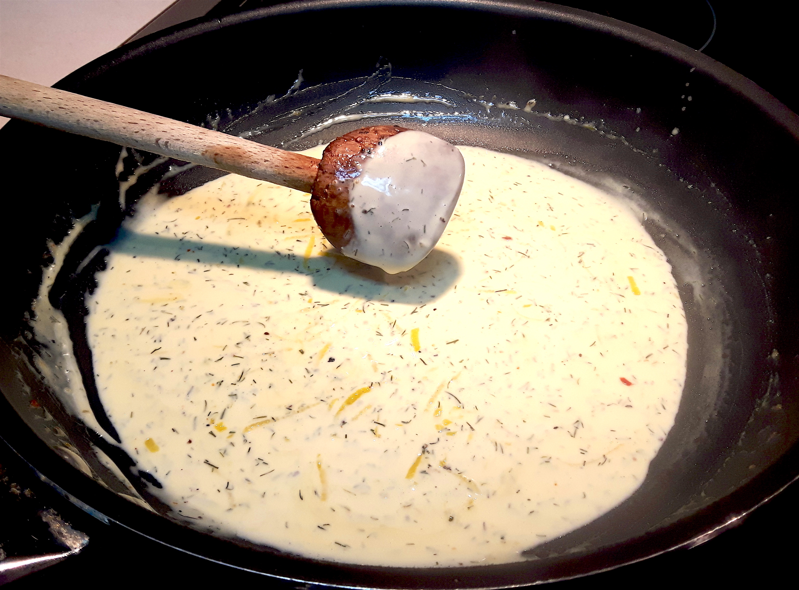

Preparation
- Preheat oven to 425°F.
- Oil an oven safe, shallow dish and place fillets skin-side down with an inch of space between.
- Season evenly with salt, pepper, Cajun seasoning, and half of your chopped dill weed. Rub lightly into flesh.
- Zest lemon, setting lemon zest aside, covered. Cut lemon lengthwise and into 1/4" slices ("sunrise" cut). 
- Lay lemon slices in a layer atop fillets, providing coverage from direct heat. If possible, overlap slices to eliminate large gaps.
- Once oven has reached temperature, bake uncovered for 20-25 minutes, or until cooked medium.
- Heat a saucepan over medium heat. Add white wine, bring to boil, and then simmer over low heat for 1 to 2 minutes.
- Add whipping cream slowly into pan, stirring steadily. Do not allow cream to boil.
- Add shallot, lemon zest, and the remainder of dill weed. Salt and pepper to taste. Simmer until thickened, stirring constantly. 
- Add salt, pepper, white wine or lemon juice to taste. Once satisfied with the flavour, remove sauce from heat and allow it to thicken on standing (~2 minutes).
Salmon (30 minutes)
Tip: Looking for something to do earlier in the day? Prepare the filets to this point ahead of time! Simply cover and refrigerate until 30 minutes before meal time.
Sauce (10 minutes)
Tip: Not sure when the sauce is ready? Trust the wooden spoon! A wooden spoon is ideal for testing a cream sauce's consistency because of its grain. Dip the back of the spoon in your sauce and hold it over the pan - does the sauce coat the spoon or just run off? If it coats the spoon, you're all set!